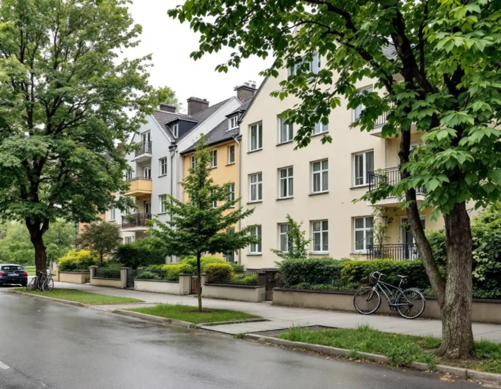
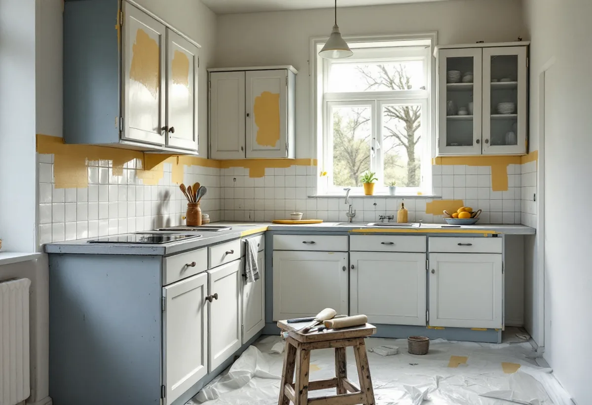

Besök
Vi skrapar en provyta och ser hur väl de gamla lagren sitter.
Flera kvarter i centrala Sundbyberg har hus som byggdes när trästaden revs på 1940-talet. Geal Entreprenad AB målar lägenheter, trapphus och fasader i Sundbyberg, och vi börjar med att se vilka färger väggarna har fått sedan dess och vem som beslutar om de ytor som syns från gatan.

Stadsmuseets text om Sundbyberg i serien Stockholms spår berättar att stadens historia tog fart på 1870-talet, när industrierna i Stockholm drog folk från hela landet. Anders Petter Löfström, som ägde Sundbybergs gård, sålde mark till bostäder och till den nya järnvägen. Redan 1887 var mer än hälften av de män som bodde där kroppsarbetare. Byggnadsstadgan krävde breda esplanader för att minska eldfaran, men i övrigt hade byggherrarna stor frihet, och trävillor, hyreskaserner och fabriker blandades.
Under 1940-talet försvann den centrala trähusbebyggelsen, och de lamellhus som i dag står vid Prästgatan, Fågelsången och Vegagatan byggdes. I slutet av 1960-talet kom nästa stora rivningsvåg, då stadsbilden söder om järnvägen förändrades. Några fabriker står kvar, som Maccaronifabriken från 1900 på Järnvägsgatan och Gummifabriken från 1914 på Fredsgatan. För en målare betyder det att husen i centrum har mycket olika åldrar, även när de står i samma kvarter.

Statens fastighetsverk beskriver hur färgerna ändrades just när lamellhusen var nya. Alkydfärg användes gärna i utrymmen med höga krav på hygien, bland annat bostadskök och badrum. Den första latexfärgen, som då kallades plastfärg, tillverkades i Sverige från 1951, och en konkurrerande produkt kom 1954. Bindemedlet i båda var styren-butadien, med mycket dålig vidhäftning och kraftig gulning, och det ersattes ganska snart av akrylat och polyvinylacetat. Latexfärgerna användes till en början främst inomhus.
Målarrullen presenterades i svenskt byggnadsmåleri under andra världskriget och var allmänt accepterad en bit in på 1960-talet. En vägg i en lägenhet från 1940-talet kan alltså ha limfärg, oljefärg eller en tidig plastfärg längst in, med latex ovanpå. Om färgen släpper i flagor när vi skrapar på en provyta kan ett svagt lager längre in vara förklaringen, och då hjälper det inte att bara stryka på mer färg. Löst material tas bort ner till fast underlag innan väggen spacklas och målas.
Sundbybergs stad skriver att flerbostadshus behöver bygglov när en ändring görs på en fasad eller ett tak som vetter mot allmän plats, och byte av kulör eller material räknas upp bland fasadändringarna. I Duvbo och för kulturhistoriskt värdefulla byggnader är lovplikten utökad. Till ansökan hör oftast situationsplan, plan- och fasadritning, en kulör- och materialbeskrivning och en kontrollplan. Även när inget lov krävs ansvarar byggherren för att lagens krav uppfylls, och det går att söka frivilligt bygglov.
I en bostadsrättsförening är fasaden och trapphuset gemensamma ytor, och Skatteverket ger inget rotavdrag för att måla fasader, balkonger eller utsidan av fönster i en bostadsrätt. Vill föreningen måla om trapphuset eller byta kulör mot gatan hjälper vi till med kulörbeskrivningen till ansökan. Mer om Duvbos villor och lovregler finns under köksrenovering i Sundbyberg och under byggföretag i Sundbyberg.
I kök och badrum behövs en färg som tål fukt och avtorkning. Limfärg är enligt Riksantikvarieämbetet olämplig där, medan linoljefärg kan användas i både våta och torra utrymmen. För en slät yta på puts i kök och badrum beskriver handboken grundning, bredspackling, slipstrykning och färdigstrykning. Statens fastighetsverk påpekar att den lösningsmedelsburna alkydfärgen har fasats ut sedan 1980-talet, men att det finns vattenspädbara alkydemulsioner för inomhusbruk.
Taken i äldre lägenheter kan vara målade med limfärg, som var vanlig takfärg fram till 1950-talet, och då behöver limfärgen patenteras eller tvättas ner innan taket målas om. Ska köket byggas om samtidigt passar målningen in sist, när snickerierna sitter på plats. Hur altaner och plank byggs i kommunen beskrivs under snickare i Sundbyberg, och målning i stort finns på sidan om målare.
Vi skrapar en provyta och ser hur väl de gamla lagren sitter.
Lägenheten är din sak, trapphus och fasad föreningens, och fasaden mot gatan kan kräva lov.
Förarbete, färgtyp per rum och ROT redovisas tydligt.
Lösa lager skrapas bort och väggarna spacklas där det behövs.
Våtrum och kök med tålig färg, övriga rum efter underlaget.
Vi går igenom lägenheten med dig och bättrar där det behövs.
Målar du om väggar, tak, golv, element, köksluckor eller innerdörrar i din bostadsrätt i Sundbyberg ger det rotavdrag, så länge stadgarna lägger ansvaret på dig. Föreningens fasad, balkonger och trapphus ger inget avdrag, och arbete i en hyrd lägenhet räknas inte heller.
Rotavdraget är 30 procent av arbetskostnaden och högst 50 000 kr per person och år, och rot och rut får tillsammans vara högst 75 000 kr. Material och resor ingår inte i underlaget. Avdraget dras direkt på fakturan från Geal.
Hur mycket gammal färg som har släppt, hur många rum och snickerier som ska målas, om kök och badrum kräver extra spackling och, för en förening, hur stora fasad- och trapphusytorna är påverkar priset. Du får ett skriftligt kostnadsförslag efter ett kostnadsfritt besök.
Fasad, fönster och invändig målning.
Målare i Stockholm →Takbyte, takbesiktning och plåtarbeten.
Takläggare i Sundbyberg →Rött lertegel och synliga taktassar i Duvbo.
Takrenovering i Sundbyberg →Ventilationen, OVK och Duvbo.
Badrumsrenovering i Sundbyberg →Nytt hus, träd och regler i Duvbo.
Byggföretag i Sundbyberg →Panel och puts på Duvbos villor.
Fasadrenovering i Sundbyberg →Duvbo, flerbostadshusen och lovet.
Fönsterbyte i Sundbyberg →Trägolv i äldre villor och nya golv.
Golvläggare i Sundbyberg →Ta bort färg och fernissa från gamla golv.
Golvslipning i Sundbyberg →Duvbos villor och stadens lägenhetskök.
Köksrenovering i Sundbyberg →Duvbos tak, rännor och lov.
Plåtslagare i Sundbyberg →Altan, pergola och staket enligt stadens guide.
Snickare i Sundbyberg →Container, ställning och grannar.
Takbyte i Sundbyberg →Ny tapet i äldre lägenheter.
Tapetsering i Sundbyberg →Duvbo, träden och riktlinjerna.
Tillbyggnad i Sundbyberg →